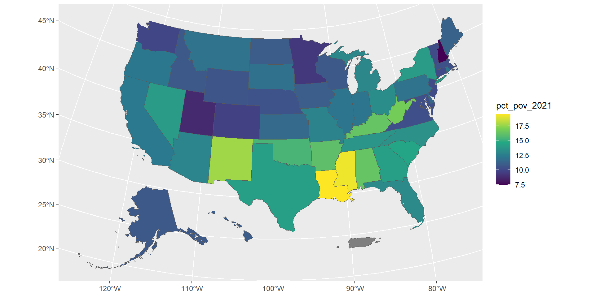
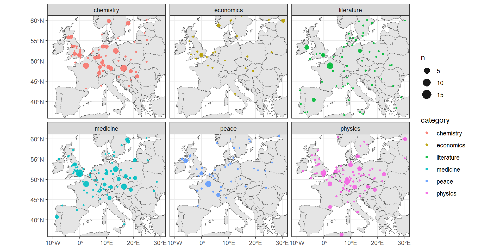
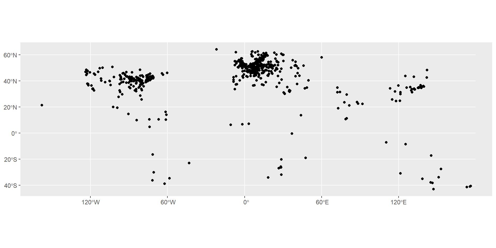
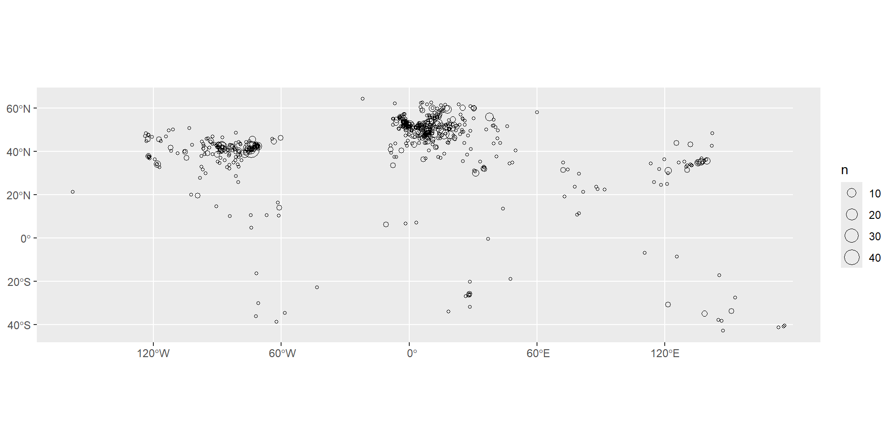
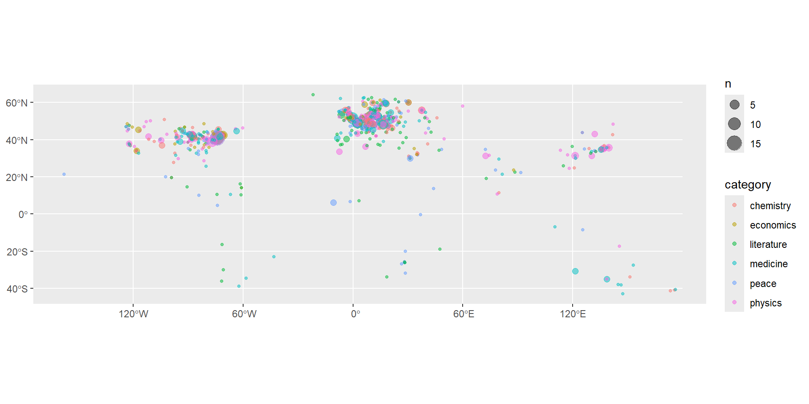
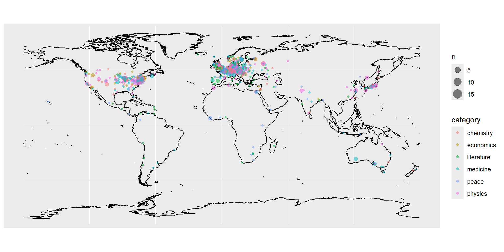
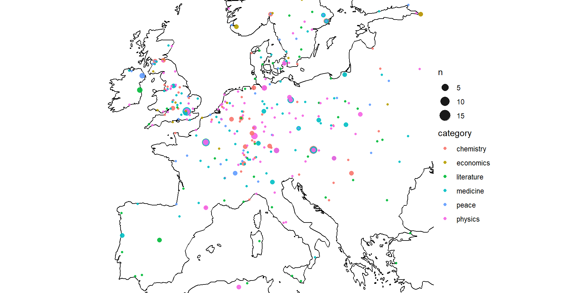
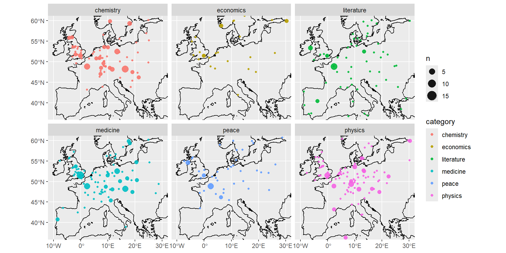
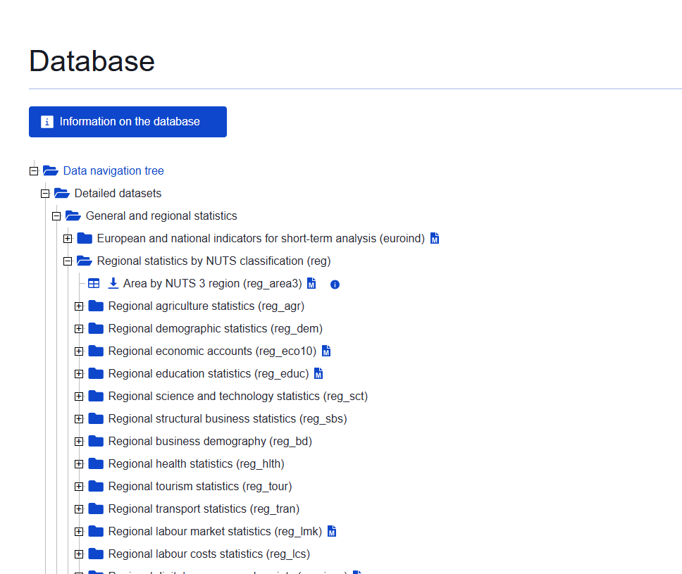

separate()st_as_sf()coords =crs = 4326.Turning this into a basic map is very simple, and follows the syntax from previous weeks, using geom_sf.


show.legend = "point"


facet_wrap()~ in between
Make a points map using the ‘extinct languages’ dataset in Posit.
Add a basemap using RNaturalEarth
Restrict the map to a chosen area
Colour the data by the endangered status.
The following is a good example of the kind of real-world workflow in making a map from external data, including the kinds of problems with matching and cleaning you’ll often encounter.
Using the eurosat database, choose a dataset to visualise. You want to choose something from Detailed datasets -> General and Regional Statistics -> Regional statistics by NUTS classification (reg), as in the screenshot here:

Download a shapefile of the NUTS regions from the official EU site. Choose the least-detailed scale so you don’t run into computer memory problems. Select the ESPG: 4326 CRS.
Upload these files to Posit cloud (or keep on your local machine if you’re running R there).
Make a map. Start by selecting a single year and shading each region by the colour of your dataset.
See how far you can get with the following:
Use a fill colour palette which more easily distinguishes the lower and higher values.
Use theming to remove unwanted elements of the map.
Adjust the coordinate limits to focus on the main region of Europe, ignoring the Atlantic islands.
The map looks a little strange with missing regions and countries (i.e the UK). How could we solve this, so they are at least present, but perhaps grayed out?
Try this extra challenge: make a version which creates a series of mini-maps, one for each year in the data. To do this you’ll need to pivot your data so that it is in a ‘long’ format, with each data point for each year in a single row, and use a function called facet_wrap().